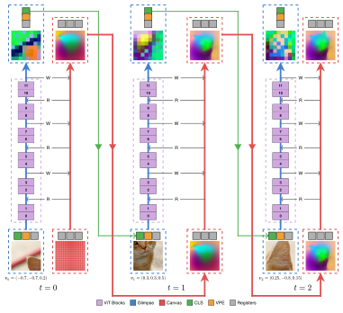

1Instantaneous vision
Making sense of what it sees at a given moment.
1McGill University2Mila – Quebec AI Institute3Université Laval4Lamarck Labs
 NeurIPS 2026
NeurIPS 2026
Active computer vision promises efficient, biologically plausible perception through sequential, localized glimpses, but lacks scalable general-purpose architectures and pretraining pipelines, leaving Active-Vision Foundation Models (AVFMs) underexplored. We introduce the Canvas Vision Transformer (CanViT), the first task- and policy-agnostic AVFM. CanViT uses scene-relative RoPE to bind a retinotopic Vision Transformer backbone and a spatiotopic scene-wide latent workspace, the canvas. Efficient interaction with this high-capacity working memory is supported by Canvas Attention, a novel asymmetric cross-attention mechanism. We decouple thinking (backbone-level) and memory (canvas-level), eliminating canvas-side self-attention and fully-connected layers to achieve fast sequential inference and scalability to high output resolutions. We propose a label-free active vision pretraining scheme, policy-agnostic passive-to-active dense latent distillation: reconstructing scene-wide DINOv3 embeddings from sequences of low-resolution glimpses with randomized locations, zoom levels, and lengths. We pretrain CanViT‑B from a random initialization on 13.2 million ImageNet-21k scenes and 1 billion random glimpses, in 166 hours on a single H100. On ADE20K segmentation, a frozen CanViT‑B achieves 38.5% mIoU in a single low-resolution glimpse, outperforming the best active model's 27.6% with 20x fewer inference FLOPs as well as its FLOP- or input-matched DINOv3 teacher. Given additional glimpses, CanViT‑B reaches 45.9% ADE20K mIoU. On ImageNet-1k classification, CanViT‑B also sets a new active‑vision state of the art, with 84.5% top-1 accuracy after fine-tuning. CanViT generalizes to longer rollouts, larger scenes, and new policies. Our work narrows the wide gap between passive and active computer vision, demonstrating the potential of task- and policy-agnostic AVFM pretraining.
Seeing
Making sense of what it sees at a given moment.
Updating a persistent, evolving understanding of the scene, which may in turn inform further processing.
ObserverCanViT
Choosing where to look
Deciding where and at what zoom level to look next.
PolicyAnything you want
No policy can make up for a poor observer. A general-purpose observer lets you use any policy.
CanViT is such an observer.

We adopt a dual-stream structure, equipping a ViT backbone, which processes localized glimpses, with a canvas, a fine-grained scene-wide spatio‑semantic memory.
At each timestep t, a glimpse is extracted from a viewpoint vt = (xt, yt, st), patchified, and processed through the backbone, alongside a recurrent CLS token and a Viewpoint Encoding (VPE) token.
The canvas regularly interacts with the glimpse stream via Canvas Attention, alternating between Read (R) and Write (W) operations to, respectively, condition the backbone's processing on the canvas and populate the canvas. Both streams are equipped with register tokens.
Before knowing where to look, we should know how to see.
@inproceedings{berreby2026canvit,
title={CanViT: Toward Active-Vision Foundation Models},
author={Berreby, Yoha{\"i}-Eliel and Du, Sabrina and
Durand, Audrey and Krishna, B. Suresh},
booktitle={Advances in Neural Information Processing Systems},
year={2026},
eprint={2603.22570},
archivePrefix={arXiv},
primaryClass={cs.CV},
url={https://arxiv.org/abs/2603.22570}
}